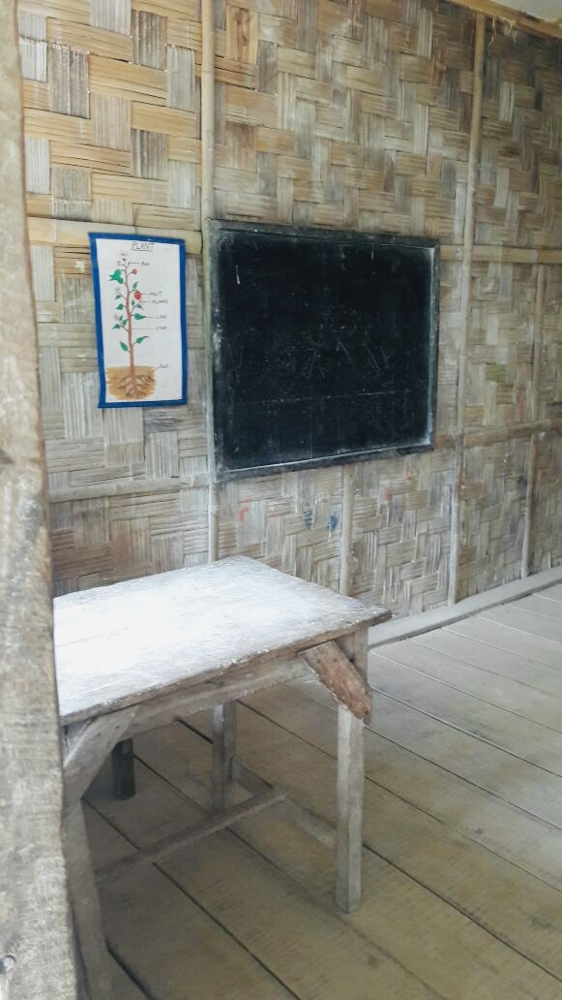
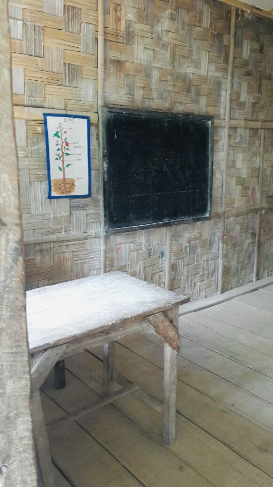

Remote Area
Resources are often limited in remote areas. Building a solid educational foundation should not be a resource that is limited. The lands of the Chang and other Eastern Naga tribes are not easy to access. One must travel through rugged mountainous terrain to both enter and leave the towns and villages. But this area is home to the people living there. It is a land that they love. One of the strengths of being in a remote area is a closeness and bonding to the family and clan. The sense of remoteness solidifies the culture. However, there is already access to the outside world through government services and through the media. The question is not will the Eastern Naga tribes be in contact with the outside world. The question is how will the people process this contact. One way many young people have processed this contact is through addictive behaviors. The Ongbou Chang Education Foundation wants young people to have the knowledge to choose behaviors and have goals that will lift them up, and not drag them down.
.jpg)

Recruiting Teachers
One of the challenges of developing and maintaining a school in such a remote area is finding and retaining good teachers. This is not the place most outsiders consider for a teaching career. It is remote and resources are limited. A more stable environment with adequate classroom resources and some of the basics like indoor plumbing and walls solid enough to keep out the rains in the warm monsoon season or the biting cold wind in the winter not only help the students learn, but also help the teachers first come to the school and then stay at the school. Appropriate housing for the teachers is also a major need.
Hope and Opportunity
The Ongbou Chang Education foundation strives for hope and opportunity for the young people. This includes a foundational knowledge base as well as the preparation for higher education as many opportunities require formal education and the passing of examinations. A solid foundation also means developing a strong character to be able to manage the many new messages coming from the outside world. In addition to character and social skills students will still need to develop strong communication, scientific, and mathematical skills. The OCEF supports students being well-rounded in a quality education.


Immediate Need
The foundation has identified one immediate need. There is a school in a village (Tuensang Village) that is functional, but with facilities in need of upgrade. The school is reaching out for a new building. OCEF has helped the school since 2012 with some temporary fixes. But a building with the basics of indoor plumbing, including restrooms, a roof and walls strong enough to keep out the cold winter winds and the wet summer rains is necessary. The school has the land but will need to raise about $150,000 to construct an adequate new building.
Self-Sustainment
Ultimately the goal is for the local community to maintain and run the school. But initial seed money is needed to help the school build a new building and have an environment where teachers not only want to come to work, but want to stay as well. The idea is that the school not be dependent on foreign aid, but that once the initial investment is made, the community will have the resources to maintain the school. This will allow the foundation to replicate such an effort in another remote, tribal area.